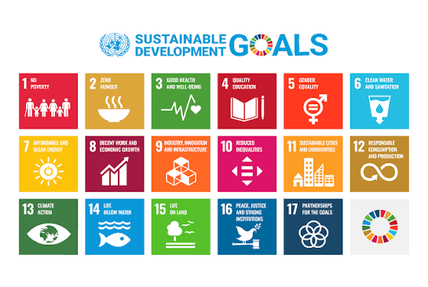

Global Politics (POLS 200)
Instructor information
Dr. José Marichal (he/him/his)
Professor of Political Science
Office Hours: SWEN 228: 2:15 to 3:15 Monday, Wednesday, and Friday (or by appointment)
Contact: marichal@callutheran.edu
Time and Place: 9:15am section in Gilbert 253; 1:00pm section in Swenson 106
About the Instructor
José Marichal is a professor of political science at California Lutheran University. His research specializes in the role that algorithms and AI play in restructuring social and political institutions. He is the author of You Must Become an Algorithmic Problem (2023) and Facebook Democracy. His upcoming book, Machine Liberalism: Reconceptualizing Rights in the Age of AI, is slated for 2027.
Course Goals
The course aims to build a "global affairs toolkit" to help students understand the complex and uncertain international landscape. It covers fundamental lenses of global politics, political and economic systems, globalization vs. nationalism, and the impact of AI and technology.

Career Pathways in Political Science
This course develops skills applicable to five core career pathways:
- Law & Government: Law school, courts, legislative offices, public administration, campaigns. (Example: Legislative Aide for a State Senator)
- International & Global Affairs: Diplomacy, NGOs, human rights, international organizations, foreign service. (Example: Foreign Service Officer for the State Department)
- Policy & Research: Think tanks, policy institutes, government analysis, program evaluation. (Example: Policy Analyst at a Non-Partisan Think Tank)
- Community Development & Advocacy: Nonprofits, advocacy, community organizing, civic engagement. (Example: Community Organizer for a Regional Housing Advocacy Group)
- Pre-Law & JD/Legal Professions: LSAT preparation and fellowships, legal and paralegal internships, law school readiness. (Example: Assistant Public Defender)
Class Environment & Rules
- Respectful Discourse: The class is a "safe place" where rude interruptions, insults, or personal attacks will not be tolerated.
- Late Policy: No make-ups or re-writes are offered for quizzes or exams. Late take-home assignments are generally not graded without emergency documentation.
Device and AI Policy
Following the pedagogical model recently adopted by the University of Chicago’s Social Sciences Core, this course is designed as an "analog" environment. We strongly believe that equipping students to read, write, and think independently—without dependence on artificial intelligence or constant digital distraction—is essential to evaluating the complex problems of global governance.
- Device-Free Classroom: The use of laptops, tablets, and smartphones is generally prohibited during class. Our seminars will rely on device-free, guided discussions to afford students the freedom to think for themselves and engage in good faith, face-to-face, without the cacophony of disembodied voices.
- AI Tool Usage: You are welcome to use artificial intelligence tools (e.g., ChatGPT, Claude) to brainstorm ideas, clarify concepts, or improve your general understanding of the material. However, the use of AI to write, draft, or complete any graded assignments is strictly prohibited. Human engagement and human expertise remain central to the core work of this class.
Exceptions to the device-free norm may occasionally be carved out by the instructor for specific purposes, such as collectively examining tabulations in a dataset or accessing specific library resources. If you need an accommodation to use technology due to a disability, please contact Disability Support Services (DSS) so we can arrange the appropriate modifications.
Course Resources
Global Politics Seminar Workbook
This class requires a physical, printed workbook where you will complete your Living Rights Portfolio reflections, Debate Project worksheets, and Case Study Debate notes.
Attendance Policy
Regular attendance participation in class sessions is vital to course learning experiences. You are expected to attend all scheduled class sessions. If illness or emergency results in absence, then email me as soon as possible; on Canvas, review each session’s lecture slides (key course content covered that day). I will take a roll call during class sessions. A few absences are anticipated during a semester, and you are responsible for material covered during any class you miss. However, if you miss more than five classes for unexcused reasons, you cannot pass the course.
Course Assignments
Below is a summary of the assignments for this course. Please note that as part of your coursework, you will also complete the Global Politics Podcast Project. In this assignment, you will step into the shoes of a policy journalist to interview a practitioner working in an international NGO, intergovernmental organization (IGO), or global policy think tank. You'll research their recent work, conduct a 45-minute interview, and record it as a podcast episode that bridges their global work to our local context in Ventura County.
| Assignment Type & Title | Description | Points | % of Total |
|---|---|---|---|
| Seminar Participation, Daily Debates, & Attendance | Active, informed contributions in seminar discussions, simulations, breakout analysis, and regular attendance. | 10 | 10% |
| Global Politics Podcast Project | Research and record a 45-minute interview with a regional policy practitioner. | 25 | 25% |
| Global Politics Workbook | In-class policy advocacy workbook completed on Fridays starting Week 2. Graded pass/fail (1 pt each). | 15 | 15% |
| Midterm Examination | Institutional mechanics IDs + theoretical essay on Market vs. Polis and Polycrisis vs. Abundance. | 25 | 25% |
| Final Examination | Comprehensive exam similar to the midterm, covering institutional mechanics and theoretical course frameworks. | 25 | 25% |
University Policies
(Refer to standard university policies for Title IX, Disability Support Services, Academic Honesty, and Veteran Resources.)
Week 1: Theories of Global Politics
- Read: Adam Tooze, "What is a polycrisis? Historian Adam Tooze explains" (World Economic Forum, 2023)
- Listen: Adam Tooze on the Polycrisis (Podcast)
- ***Discussion Prompt:** How does the concept of a "polycrisis" differ from simply facing multiple separate problems simultaneously?*
Week 2: Theories & Democracy
- Based on the "What Democracy Is... and Is Not" reading, what is a common misconception about democracy that you found surprising or challenging?
- How does the distinction between "liberalism" and "democracy" help us understand current political tensions in the US or globally?
- If democracy is not just "majority rule," what are the essential components that make a system truly democratic according to Schmitter and Lynn?
Week 3: Is (US) Liberal Democracy the Best form of Government?
- Levitsky & Ziblatt argue that democracies often die at the ballot box rather than through coups. What are the "warning signs" or key indicators they believe we should watch for?
- How do "norms" (unwritten rules) protect democracy, and can you identify a recent example where a political norm was tested or broken?
- Is the concern about democratic backsliding in the US overstated, or do you see evidence of the pattern Levitsky & Ziblatt describe in your own political observations?
Week 4: Is (US) Liberal Democracy the Best form of Government?
Week 5: Is there an alternative to capitalism?
Week 6: Is there an alternative to capitalism?
Week 7: Is Globalization Good for Humanity?
Week 8: Is Globalization Good for Humanity?
Week 9: Is Nationalism Bad for Humanity?
Week 10: Is Nationalism Bad for Humanity?
Week 11: Is Nationalism Bad for Humanity?
Week 12: Is AI a Threat to the International Order?
Week 13: Is AI a Threat to the International Order?
Week 14: Is AI a Threat to the International Order?
Week 15: Is AI a Threat to the International Order?
Finals Week
Course Grading Policy
Student work will be graded based on analytical rigor, integration of course concepts, clarity of writing, and empirical accuracy. Grading rubrics for the Final Examination are available in Canvas. Students can expect to receive feedback on reading memos within one week of submission, and within two weeks for major papers.
| Score Range | Letter | Score Range | Letter |
|---|---|---|---|
| Over 93% | A | 73% to 76% | C |
| 90% to 92% | A- | 70% to 72% | C- |
| 87% to 89% | B+ | 67% to 69% | D+ |
| 83% to 86% | B | 63% to 66% | D |
| 80% to 82% | B- | 60% to 62% | D- |
| 77% to 79% | C+ | <60% | F |